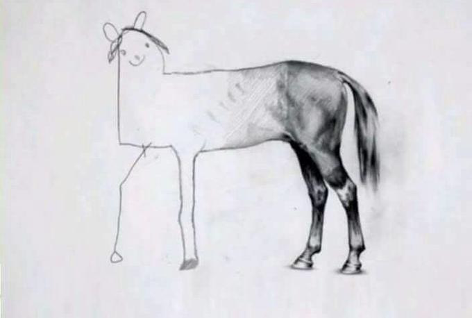

이 블로그의 존재 이유
- ‘셀프 브랜딩’의 시작
- 단기적으로는 취업 준비
- 장기적으로는 목표(사명)와 가치 체계의 확립
기록하는 이유
기록하지 않으면 쌓이지 않기 때문! 스스로의 기억력을 믿지 말자. 계속 처음부터 시작해서 책의 첫 장만 너덜너덜해지는 공부를 원하지 않는다.
같은 실수를 반복하지 않게하기 때문. 내가 지금 어디에 있는지, 어디로 가고 있는지, 어디로 가야하는지 필요할 때마다 체크할 수 있게 해주는 것이 기록이다. 꾸준함은 이러한 방향 체크에서 비롯된다.

주의사항
- Done is Better Than Perfect. 처음부터 다시 하자는 강박, 처음부터 완벽하겠다는 집착을 버리자.
- 자유를 핑계로 한 게으름, 무책임함을 버리자.
- 성격불문 기록과 계획이 필요함을 인지하자.
- 줄기와 가지를 잘 구분하자. 중요하지 않은 것에 시간 쏟지 말자.